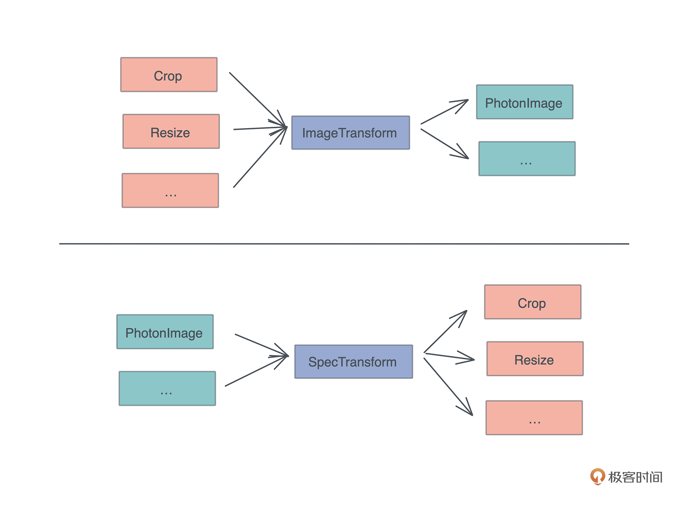

- 00 开篇词 让Rust成为你的下一门主力语言.md.html
- 01 内存：值放堆上还是放栈上，这是一个问题.md.html
- 02 串讲：编程开发中，那些你需要掌握的基本概念.md.html
- 03 初窥门径：从你的第一个Rust程序开始！.md.html
- 04 get hands dirty：来写个实用的CLI小工具.md.html
- 05 get hands dirty：做一个图片服务器有多难？.md.html
- 06 get hands dirty：SQL查询工具怎么一鱼多吃？.md.html
- 07 所有权：值的生杀大权到底在谁手上？.md.html
- 08 所有权：值的借用是如何工作的？.md.html
- 09 所有权：一个值可以有多个所有者么？.md.html
- 10 生命周期：你创建的值究竟能活多久？.md.html
- 11 内存管理：从创建到消亡，值都经历了什么？.md.html
- 12 类型系统：Rust的类型系统有什么特点？.md.html
- 13 类型系统：如何使用trait来定义接口？.md.html
- 14 类型系统：有哪些必须掌握的trait？.md.html
- 15 数据结构：这些浓眉大眼的结构竟然都是智能指针？.md.html
- 16 数据结构：Vec_T_、&[T]、Box_[T]_ ，你真的了解集合容器么？.md.html
- 17 数据结构：软件系统核心部件哈希表，内存如何布局？.md.html
- 18 错误处理：为什么Rust的错误处理与众不同？.md.html
- 19 闭包：FnOnce、FnMut和Fn，为什么有这么多类型？.md.html
- 20 4 Steps ：如何更好地阅读Rust源码？.md.html
- 21 阶段实操（1）：构建一个简单的KV server-基本流程.md.html
- 22 阶段实操（2）：构建一个简单的KV server-基本流程.md.html
- 23 类型系统：如何在实战中使用泛型编程？.md.html
- 24 类型系统：如何在实战中使用trait object？.md.html
- 25 类型系统：如何围绕trait来设计和架构系统？.md.html
- 26 阶段实操（3）：构建一个简单的KV server-高级trait技巧.md.html
- 27 生态系统：有哪些常有的Rust库可以为我所用？.md.html
- 28 网络开发（上）：如何使用Rust处理网络请求？.md.html
- 29 网络开发（下）：如何使用Rust处理网络请求？.md.html
- 30 Unsafe Rust：如何用C++的方式打开Rust？.md.html
- 31 FFI：Rust如何和你的语言架起沟通桥梁？.md.html
- 32 实操项目：使用PyO3开发Python3模块.md.html
- 33 并发处理（上）：从atomics到Channel，Rust都提供了什么工具？.md.html
- 34 并发处理（下）：从atomics到Channel，Rust都提供了什么工具？.md.html
- 35 实操项目：如何实现一个基本的MPSC channel？.md.html
- 36 阶段实操（4）：构建一个简单的KV server-网络处理.md.html
- 37 阶段实操（5）：构建一个简单的KV server-网络安全.md.html
- 38 异步处理：Future是什么？它和async_await是什么关系？.md.html
- 39 异步处理：async_await内部是怎么实现的？.md.html
- 40 异步处理：如何处理异步IO？.md.html
- 41 阶段实操（6）：构建一个简单的KV server-异步处理.md.html
- 42 阶段实操（7）：构建一个简单的KV server-如何做大的重构？.md.html
- 43 生产环境：真实世界下的一个Rust项目包含哪些要素？.md.html
- 44 数据处理：应用程序和数据如何打交道？.md.html
- 45 阶段实操（8）：构建一个简单的KV server-配置_测试_监控_CI_CD.md.html
- 46 软件架构：如何用Rust架构复杂系统？.md.html
- 加餐 Rust2021版次问世了！.md.html
- 加餐 代码即数据：为什么我们需要宏编程能力？.md.html
- 加餐 宏编程（上）：用最“笨”的方式撰写宏.md.html
- 加餐 宏编程（下）：用 syn_quote 优雅地构建宏.md.html
- 加餐 愚昧之巅：你的Rust学习常见问题汇总.md.html
- 加餐 期中测试：参考实现讲解.md.html
- 加餐 期中测试：来写一个简单的grep命令行.md.html
- 加餐 这个专栏你可以怎么学，以及Rust是否值得学？.md.html
- 大咖助场 开悟之坡（上）：Rust的现状、机遇与挑战.md.html
- 大咖助场 开悟之坡（下）：Rust的现状、机遇与挑战.md.html
- 特别策划 学习锦囊（一）：听听课代表们怎么说.md.html
- 特别策划 学习锦囊（三）：听听课代表们怎么说.md.html
- 特别策划 学习锦囊（二）：听听课代表们怎么说.md.html
- 用户故事 绝望之谷：改变从学习开始.md.html
- 用户故事 语言不仅是工具，还是思维方式.md.html
- 结束语 永续之原：Rust学习，如何持续精进？.md.html
- 捐赠
25 类型系统：如何围绕trait来设计和架构系统？
你好，我是陈天。
Trait，trait，trait，怎么又是 trait？how old are you?
希望你还没有厌倦我们没完没了地聊关于 trait 的话题。因为 trait 在 Rust 开发中的地位，怎么吹都不为过。
其实不光是 Rust 中的 trait，任何一门语言，和接口处理相关的概念，都是那门语言在使用过程中最重要的概念。软件开发的整个行为，基本上可以说是不断创建和迭代接口，然后在这些接口上进行实现的过程。
在这个过程中，有些接口是标准化的，雷打不动，就像钢筋、砖瓦、螺丝、钉子、插座等这些材料一样，无论要构筑的房子是什么样子的，这些标准组件的接口在确定下来后，都不会改变，它们就像 Rust 语言标准库中的标准 trait 一样。
而有些接口是跟构造的房子息息相关的，比如门窗、电器、家具等，它们就像你要设计的系统中的 trait 一样，可以把系统的各个部分联结起来，最终呈现给用户一个完整的使用体验。
之前讲了trait 的基础知识，也介绍了如何在实战中使用 trait 和 trait object。今天，我们再花一讲的时间，来看看如何围绕着 trait 来设计和架构系统。
由于在讲架构和设计时，不免要引入需求，然后我需要解释这需求的来龙去脉，再提供设计思路，再介绍 trait 在其中的作用，但这样下来，一堂课的内容能讲好一个系统设计就不错了。所以我们换个方式，把之前设计过的系统捋一下，重温它们的 trait 设计，看看其中的思路以及取舍。
用 trait 让代码自然舒服好用
在[第 5 讲]，thumbor 的项目里，我设计了一个 SpecTransform trait，通过它可以统一处理任意类型的、描述我们希望如何处理图片的 spec：
// 一个 spec 可以包含上述的处理方式之一（这是 protobuf 定义）
message Spec {
oneof data {
Resize resize = 1;
Crop crop = 2;
Flipv flipv = 3;
Fliph fliph = 4;
Contrast contrast = 5;
Filter filter = 6;
Watermark watermark = 7;
}
}
SpecTransform trait 的定义如下（代码）：
// SpecTransform：未来如果添加更多的 spec，只需要实现它即可
pub trait SpecTransform<T> {
// 对图片使用 op 做 transform
fn transform(&mut self, op: T);
}
它可以用来对图片使用某个 spec 进行处理。
但如果你阅读 GitHub 上的源码，你可能会发现一个没用到的文件 imageproc.rs 中类似的 trait（代码）：
pub trait ImageTransform {
fn transform(&self, image: &mut PhotonImage);
}
这个 trait 是第一版的 trait。我依旧保留着它，就是想在此展示一下 trait 设计上的取舍。
当你审视这段代码的时候会不会觉得，这个 trait 的设计有些草率？因为如果传入的 image 来自不同的图片处理引擎，而某个图片引擎提供的 image 类型不是 PhotonImage，那这个接口不就无法使用了么？
hmm，这是个设计上的大问题啊。想想看，以目前所学的知识，怎么解决这个问题呢？什么可以帮助我们延迟 image 是否必须是 PhotonImage 的决策呢？
对，泛型。我们可以使用泛型 trait 修改一下刚才那段代码：
// 使用 trait 可以统一处理的接口，以后无论增加多少功能，只需要加新的 Spec，然后实现 ImageTransform 接口
pub trait ImageTransform<Image> {
fn transform(&self, image: &mut Image);
}
把传入的 image 类型抽象成泛型类型之后，延迟了图片类型判断和支持的决策，可用性更高。
但如果你继续对比现在的 ImageTransform和之前写的 SpecTransform，会发现，它们实现 trait 的数据结构和用在 trait 上的泛型参数，正好掉了个个。
你看，PhotonImage 下对于 Contrast 的 ImageTransform 的实现：
impl ImageTransform<PhotonImage> for Contrast {
fn transform(&self, image: &mut Image) {
effects::adjust_contrast(image, self.contrast);
}
}
而同样的，PhotonImage 下对 Contract 的 SpecTransform 的实现：
impl SpecTransform<&Contrast> for Photon {
fn transform(&mut self, op: &Contrast) {
effects::adjust_contrast(&mut self.0, op.contrast);
}
}
这两种方式基本上等价，但一个围绕着 Spec 展开，一个围绕着 Image 展开：- 
那么，哪种设计更好呢？
其实二者并没有功能上或者性能上的优劣。
那为什么我选择了 SpecTransform 的设计呢？在第一版的设计我还没有考虑 Engine的时候，是以 Spec 为中心的；但在把 Engine 考虑进去后，我以 Engine 为中心重新做了设计，这样做的好处是，开发新的 Engine 的时候，SpecTransform trait 用起来更顺手，更自然一些。
嗯，顺手，自然。接口的设计一定要关注使用者的体验，一个使用起来感觉自然顺手舒服的接口，就是更好的接口。因为这意味着使用的时候，代码可以自然而然写出来，而无需看文档。
比如同样是 Python 代码：
df[df["age"] > 10]
就要比：
df.filter(df.col("age").gt(10))
要更加自然舒服。前面的代码，你看一眼别人怎么用，自己就很快能写出来，而后者，你需要先搞清楚 filter 函数是怎么回事，以及col()、gt() 这两个方法如何使用。
我们再来看来两段 Rust 代码。这行使用了 From/Into trait 的代码：
let url = generate_url_with_spec(image_spec.into());
就要比：
let data = image_spec.encode_to_vec();
let s = encode_config(data, URL_SAFE_NO_PAD);
let url = generate_url_with_spec(s);
要简洁、自然得多。它把实现细节都屏蔽了起来，只让用户关心他们需要关心的逻辑。- 所以，我们在设计 trait 的时候，除了关注功能，还要注意是否好用、易用。这也是为什么我们在介绍 KV server 的时候，不断强调，trait 在设计结束之后，不要先着急撰写实现 trait 的代码，而是最好先写一些对于 trait 使用的测试代码。
你在写这些测试代码的使用体验，就是别人在使用你的 trait 构建系统时的真实体验，如果它用起来别扭、啰嗦，不看文档就不容易用对，那这个 trait 本身还有待进一步迭代。
用 trait 做桥接
在软件开发的绝大多数时候，我们都不会从零到一完完全全设计和构建系统的所有部分。就像盖房子，不可能从一抔土、一块瓦片开始打造。我们需要依赖生态系统中已有的组件。
作为架构师，你的职责是在生态系统中找到合适的组件，连同你自己打造的部分，一起粘合起来，形成一个产品。所以，你会遇到那些接口与你预期不符的组件，可是自己又无法改变那些组件来让接口满足你的预期，怎么办？
此刻，我们需要桥接。
就像要用的电器是二相插口，而附近墙上的插座只有三相插口，我们总不能修改电器或者墙上的插座，使其满足对方吧？正确的做法是购置一个多项插座来桥接二者。
在 Rust 里，桥接的工作可以通过函数来完成，但最好通过 trait 来桥接。继续看[第 5 讲]thumbor 里的另一个 trait Engine（代码）：
// Engine trait：未来可以添加更多的 engine，主流程只需要替换 engine
pub trait Engine {
// 对 engine 按照 specs 进行一系列有序的处理
fn apply(&mut self, specs: &[Spec]);
// 从 engine 中生成目标图片，注意这里用的是 self，而非 self 的引用
fn generate(self, format: ImageOutputFormat) -> Vec<u8>;
}
通过 Engine 这个 trait，我们把第三方的库 photon和自己设计的 Image Spec 连接起来，使得我们不用关心 Engine 背后究竟是什么，只需要调用 apply 和 generate 方法即可：
// 使用 image engine 处理
let mut engine: Photon = data
.try_into()
.map_err(|_| StatusCode::INTERNAL_SERVER_ERROR)?;
engine.apply(&spec.specs);
let image = engine.generate(ImageOutputFormat::Jpeg(85));
这段代码中，由于之前为 Photon 实现了 TryFrom
// 从 Bytes 转换成 Photon 结构
impl TryFrom<Bytes> for Photon {
type Error = anyhow::Error;
fn try_from(data: Bytes) -> Result<Self, Self::Error> {
Ok(Self(open_image_from_bytes(&data)?))
}
}
就桥接 thumbor 代码和 photon crate 而言，Engine 表现良好，它让我们不但很容易使用 photon crate，还可以很方便在未来需要的时候替换掉 photon crate。
不过，Engine 在构造时，所做的桥接还是不够直观和自然，如果不仔细看代码或者文档，使用者可能并不清楚，第3行代码，如何通过 TryFrom/TryInto 得到一个实现了 Engine 的结构。从这个使用体验来看，我们会希望通过使用 Engine trait，任何一个图片引擎都可以统一地创建 Engine结构。怎么办？
可以为这个 trait 添加一个缺省的 create 方法：
// Engine trait：未来可以添加更多的 engine，主流程只需要替换 engine
pub trait Engine {
// 生成一个新的 engine
fn create<T>(data: T) -> Result<Self>
where
Self: Sized,
T: TryInto<Self>,
{
data.try_into()
.map_err(|_| anyhow!("failed to create engine"))
}
// 对 engine 按照 specs 进行一系列有序的处理
fn apply(&mut self, specs: &[Spec]);
// 从 engine 中生成目标图片，注意这里用的是 self，而非 self 的引用
fn generate(self, format: ImageOutputFormat) -> Vec<u8>;
}
注意看新 create 方法的约束：任何 T，只要实现了相应的 TryFrom/TryInto，就可以用这个缺省的 create() 方法来构造 Engine。
有了这个接口后，上面使用 engine 的代码可以更加直观，省掉了第3行的try_into()处理：
// 使用 image engine 处理
let mut engine = Photon::create(data)
.map_err(|_| StatusCode::INTERNAL_SERVER_ERROR)?;
engine.apply(&spec.specs);
let image = engine.generate(ImageOutputFormat::Jpeg(85));
桥接是架构中一个非常重要的思想，我们一定要掌握这个思想的精髓。
再举个例子。比如现在想要系统可以通过访问某个 REST API，得到用户自己发布的、按时间顺序倒排的朋友圈。怎么写这段代码呢？最简单粗暴的方式是：
let secret_api = api_with_user_token(&user, params);
let data: Vec<Status> = reqwest::get(secret_api)?.json()?;
更好的方式是使用 trait 桥接来屏蔽实现细节：
pub trait FriendCircle {
fn get_published(&self, user: &User) -> Result<Vec<Status>, FriendCircleError>;
...
}
这样，我们的业务逻辑代码可以围绕着这个接口展开，而无需关心它具体的实现是来自 REST API，还是其它什么地方；也不用关心实现做没做 cache、有没有重传机制、具体都会返回什么样的错误（FriendCircleError 就已经提供了所有的出错可能）等等。
使用 trait 提供控制反转
继续看刚才的Engine 代码，在 Engine 和 T 之间通过 TryInto trait 进行了解耦，使得调用者可以灵活处理他们的 T：
pub trait Engine {
// 生成一个新的 engine
fn create<T>(data: T) -> Result<Self>
where
Self: Sized,
T: TryInto<Self>,
{
data.try_into()
.map_err(|_| anyhow!("failed to create engine"))
}
...
}
这里还体现了trait 在设计中，另一个很重要的作用，控制反转。
通过使用 trait，我们可以在设计底层库的时候告诉上层：我需要某个满足 trait X 的数据，因为我依赖这个数据实现的 trait X 方法来完成某些功能，但这个数据具体怎么实现，我不知道，也不关心。
刚才为 Engine 新构建的 create 方法。T 是实现 Engine 所需要的依赖，我们不知道属于类型 T 的 data 是如何在上下文中产生的，也不关心 T 具体是什么，只要 T 实现了 TryInto
使用 trait 做控制反转另一个例子是[第 6 讲]中的 Dialect trait（代码）：
pub trait Dialect: Debug + Any {
/// Determine if a character starts a quoted identifier. The default
/// implementation, accepting "double quoted" ids is both ANSI-compliant
/// and appropriate for most dialects (with the notable exception of
/// MySQL, MS SQL, and sqlite). You can accept one of characters listed
/// in `Word::matching_end_quote` here
fn is_delimited_identifier_start(&self, ch: char) -> bool {
ch == '"'
}
/// Determine if a character is a valid start character for an unquoted identifier
fn is_identifier_start(&self, ch: char) -> bool;
/// Determine if a character is a valid unquoted identifier character
fn is_identifier_part(&self, ch: char) -> bool;
}
我们只需要为自己的 SQL 方言实现 Dialect trait：
// 创建自己的 sql 方言。TyrDialect 支持 identifier 可以是简单的 url
impl Dialect for TyrDialect {
fn is_identifier_start(&self, ch: char) -> bool {
('a'..='z').contains(&ch) || ('A'..='Z').contains(&ch) || ch == '_'
}
// identifier 可以有 ':', '/', '?', '&', '='
fn is_identifier_part(&self, ch: char) -> bool {
('a'..='z').contains(&ch)
|| ('A'..='Z').contains(&ch)
|| ('0'..='9').contains(&ch)
|| [':', '/', '?', '&', '=', '-', '_', '.'].contains(&ch)
}
}
就可以让 sql parser 解析我们的 SQL 方言：
let ast = Parser::parse_sql(&TyrDialect::default(), sql.as_ref())?;
这就是 Dialect 这个看似简单的 trait 的强大用途。
对于我们这些使用者来说，通过Dialect trait，可以很方便地注入自己的解析函数，来提供我们的 SQL 方言的额外信息；对于 sqlparser 这个库的作者来说，通过 Dialect trait，他不必关心未来会有多少方言、每个方言长什么样子，只需要方言的作者告诉他如何 tokenize 一个标识符即可。
控制反转是架构中经常使用到的功能，它能够让调用者和被调用者之间的关系在某个时刻调转过来，被调用者反过来调用调用者提供的能力，二者协同完成一些事情。
比如 MapReduce 的架构：用于 map 的方法和用于 reduce 的方法是啥，MapReduce 的架构设计者并不清楚，但调用者可以把这些方法提供给 MapReduce 架构，由 MapReduce 架构在合适的时候进行调用。
当然，控制反转并非只能由 trait 来完成，但使用 trait 做控制反转会非常灵活，调用者和被调用者只需要关心它们之间的接口，而非具体的数据结构。
用 trait 实现 SOLID 原则
其实刚才介绍的用 trait 做控制反转，核心体现的就是面向对象设计时SOLID原则中的，依赖反转原则DIP，这是一个很重要的构建灵活系统的思想。
在做面向对象设计时，我们经常会探讨 SOLID 原则：
- SRP：单一职责原则，是指每个模块应该只负责单一的功能，不应该让多个功能耦合在一起，而是应该将其组合在一起。
- OCP：开闭原则，是指软件系统应该对修改关闭，而对扩展开放。
- LSP：里氏替换原则，是指如果组件可替换，那么这些可替换的组件应该遵守相同的约束，或者说接口。
- ISP：接口隔离原则，是指使用者只需要知道他们感兴趣的方法，而不该被迫了解和使用对他们来说无用的方法或者功能。
- DIP：依赖反转原则，是指某些场合下底层代码应该依赖高层代码，而非高层代码去依赖底层代码。
虽然 Rust 不是一门面向对象语言，但这些思想都是通用的。
在过去的课程中，我一直强调 SRP 和 OCP。你看[第 6 讲]的 Fetch/Load trait，它们都只负责一个很简单的动作：
#[async_trait]
pub trait Fetch {
type Error;
async fn fetch(&self) -> Result<String, Self::Error>;
}
pub trait Load {
type Error;
fn load(self) -> Result<DataSet, Self::Error>;
}
以 Fetch 为例，我们先实现了 UrlFetcher，后来又根据需要，实现了 FileFetcher。
FileFetcher 的实现并不会对 UrlFetcher 的实现代码有任何影响，也就是说，在实现 FileFetcher 的时候，已有的所有实现了 Fetch 接口的代码都是稳定的，它们对修改是关闭的；同时，在实现 FileFetcher 的时候，我们扩展了系统的能力，使系统可以根据不同的前缀（from file:// 或者 from <http://>）进行不同的处理，这是对扩展开放。
前面提到的 SpecTransform/Engine trait，包括 [21 讲]中 KV server 里涉及的 CommandService trait：
/// 对 Command 的处理的抽象
pub trait CommandService {
/// 处理 Command，返回 Response
fn execute(self, store: &impl Storage) -> CommandResponse;
}
也是 SRP 和 OCP 原则的践行者。
LSP 里氏替换原则自不必说，我们本文中所有的内容都在践行通过使用接口，来使组件可替换。比如上文提到的 Engine trait，在 KV server 中我们使用的 Storage trait，都允许我们在不改变代码核心逻辑的前提下，替换其中的主要组件。
至于 ISP 接口隔离原则，我们目前撰写的 trait 都很简单，天然满足接口隔离原则。其实，大部分时候，当你的 trait 满足 SRP 单一职责原则时，它也满足接口隔离原则。
但在 Rust 中，有些 trait 的接口可能会比较庞杂，此时，如果我们想减轻调用者的负担，让它们能够在需要的时候才引入某些接口，可以使用 trait 的继承。比如 AsyncRead/AsyncWrite/Stream 和它们对应的 AsyncReadExt/AsyncWriteExt/StreamExt 等。这样，复杂的接口被不同的 trait 分担了并隔离开。
小结
接口设计是架构设计中最核心的环节。好的接口容易使用，很难误用，会让使用接口的人产生共鸣。当我们说一段代码读起来/写起来感觉很舒服，或者很不舒服、很冗长、很难看，这种感觉往往就来自于接口给人的感觉，我们可以妥善使用 trait 来降低甚至消除这种不舒服的感觉。
当我们的代码和其他人的代码共存时，接口在不同的组件之间就起到了桥接的作用。通过桥接，甚至可以把原本设计不好的代码，先用接口封装成我们希望的样子，然后实现这个简单的包装，之后再慢慢改动原先不好的设计。
这样，由于系统的其它部分使用新的接口处理，未来改动的影响被控制在很小的范围。在第 5 讲设计 thumbor 的时候我也提到，photon 库并不是一个设计良好的库，然而，通过 Engine trait 的桥接，未来即使我们 fork 一下 photon 库，对其大改，并不会影响 thumbor 的代码。
最后，在软件设计时，我们还要注意 SOLID 原则。基本上，好的 trait，设计一定是符合 SOLID 原则的，从 Rust 标准库的设计，以及之前讲到的 trait，结合今天的解读，想必你对此有了一定的认识。未来在使用 trait 构建你自己的接口时，你也可以将 SOLID 原则作为一个备忘清单，随时检查。
思考题
Rust 下有一个处理 Web 前端的库叫 yew。请 clone 到你本地，然后使用 ag 或者 rgrep（eat our own dogfood）查找一下所有的 trait 定义，看看这些 trait 被设计的目的和意义，并且着重阅读一下它最核心的 Component trait，思考几个问题：
Component trait 可以做 trait object 么？
关联类型 Message 和 Properties 的作用是什么？
作为使用者，该如何用 Component trait？它的 lifecycle 是什么样子的？
如果你之前有前端开发的经验，比较一下 React/Vue/Elm component 和 yew component 的区别？
yew on master via 🦀 v1.55.0 ❯ rgrep “pub trait” “*/.rs” examples/router/src/generator.rs 155:1 pub trait Generated: Sized { packages/yew/src/html/component/mod.rs
42:1 pub trait Component: Sized + 'static {packages/yew/src/html/component/properties.rs
6:1 pub trait Properties: PartialEq {examples/boids/src/math.rs 128:1 pub trait WeightedMean
: Sized { 152:1 pub trait Mean : Sized { packages/yew/src/functional/mod.rs 69:1 pub trait FunctionProvider {packages/yew/src/html/conversion.rs
5:1 pub trait ImplicitClone: Clone {} 18:1 pub trait IntoPropValue<T> {packages/yew/src/html/listener/mod.rs
27:1 pub trait TargetCast136:1 pub trait IntoEventCallback
{ packages/yew/src/scheduler.rs 11:1 pub trait Runnable {packages/yew-router/src/routable.rs
16:1 pub trait Routable: Sized + Clone {packages/yew-agent/src/pool.rs
60:1 pub trait Dispatched: Agent + Sized + 'static { 78:1 pub trait Dispatchable {}packages/yew/src/html/component/scope.rs 508:1 pub trait SendAsMessage
16:1 pub trait Stringify {packages/yew-agent/src/lib.rs
22:1 pub trait Agent: Sized + 'static { 82:1 pub trait Discoverer { 92:1 pub trait Bridge<AGN: Agent> { 98:1 pub trait Bridged: Agent + Sized + 'static {packages/yew-agent/src/utils/store.rs
20:1 pub trait Store: Sized + 'static {138:1 pub trait Bridgeable: Sized + ‘static { packages/yew-macro/src/html_tree/mod.rs 178:1 pub trait ToNodeIterator { packages/yew/src/virtual_dom/listeners.rs
42:1 pub trait Listener {packages/yew-agent/src/worker/mod.rs
17:1 pub trait Threaded { 24:1 pub trait Packed {
感谢你的阅读，如果你觉得有收获，也欢迎你分享给身边的朋友，邀他一起讨论。今天你已经完成Rust学习的第25次打卡啦，我们下节课见！
© 2019 - 2023 Liangliang Lee. Powered by gin and hexo-theme-book.